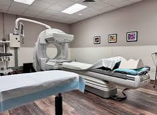
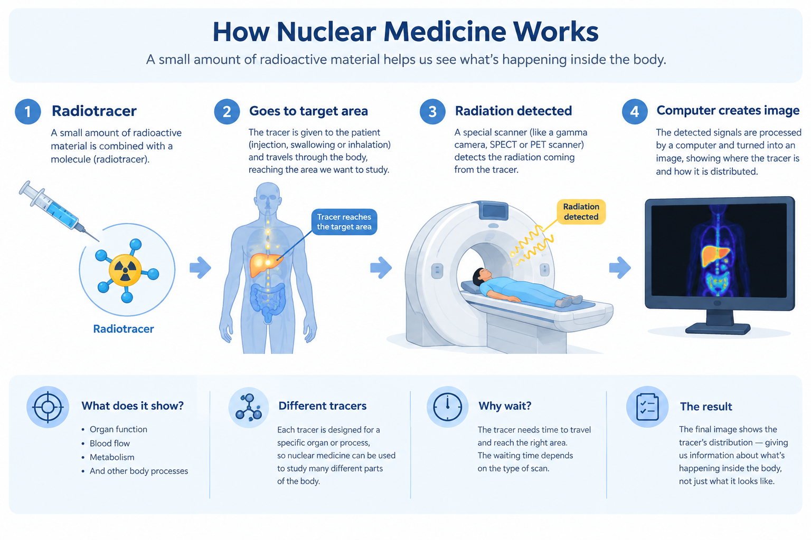

Most medical imaging techniques help us see what the body looks like.
X-rays show bones and other structures. CT provides detailed cross-sectional images. MRI gives excellent images of soft tissues. Ultrasound lets us see structures in real time.
But sometimes, looking at structure is not enough.
We may also want to know:
How active is a tissue?
Where is a particular biological process happening?
This is where nuclear medicine becomes especially useful.
Nuclear medicine uses small amounts of radioactive material to study processes happening inside the body. Depending on the examination, it can provide information about organ function, blood flow, metabolism, bone activity, and other biological processes.

What is nuclear medicine?
Nuclear medicine is a type of medical imaging that uses small amounts of radioactive material to study the body.
The radioactive material is usually part of a radiopharmaceutical, often called a radiotracer when it is being used to trace a biological process.
The tracer is given to the patient and travels to the part of the body being studied. Special equipment then detects the radiation coming from the tracer and uses this information to create an image.
The basic idea is:
There is an important difference between nuclear medicine and a conventional X-ray.
In an X-ray examination, the imaging system sends X-rays through the body and measures how much radiation reaches the detector.
In nuclear medicine, the radioactive material is inside the body, and the scanner detects radiation emitted from it.
That difference is one of the key ideas behind nuclear medicine.
What is a radiotracer?
A radiotracer is a radioactive substance used to follow a particular process inside the body.
The radioactive part allows the imaging system to detect it.
The tracer is designed so that it is taken up by, or behaves in a way related to, a particular organ, tissue, or biological process.
You can think of it as a tiny marker that allows us to follow something happening inside the body.
Different tracers are used for different examinations because each one behaves differently in the body.
Depending on the examination, a radiotracer may be:
- injected into a vein
- swallowed
- or inhaled
The method depends on the type of study being performed.

How does a nuclear medicine scan work?
The exact procedure depends on the examination, but the basic process is quite simple.
1. The tracer is given
The patient receives the radiotracer in the way required for that examination.
2. The tracer travels through the body
The tracer moves through the body and reaches the area being studied.
Sometimes, the patient needs to wait before imaging. This gives the tracer time to distribute or accumulate in the tissues of interest.
3. The scanner detects the radiation
A specialized imaging system detects radiation emitted from the tracer.
Different nuclear medicine examinations use different equipment, including gamma cameras and PET scanners.
4. The image is created
The detected signals are processed by a computer to create an image showing the distribution of the tracer.
So, unlike a conventional photograph of the body, a nuclear medicine image represents where the tracer is distributed and how it behaves.
What can nuclear medicine tell us?
This is one of the most important things to understand about nuclear medicine.
Because different tracers follow different biological processes, nuclear medicine can provide information about how certain parts of the body are functioning.
Depending on the examination, it can help study:
- blood flow
- organ function
- metabolism
- bone activity
- specific biological processes
For example, some tracers are taken up by cells that use more glucose.
This means that instead of looking only at the shape of an organ, nuclear medicine can also provide information about what is happening within it.
What are PET and SPECT?
Two important types of nuclear medicine imaging are PET and SPECT.
Both use radioactive tracers, but they detect radiation in different ways.
SPECT
SPECT stands for Single-Photon Emission Computed Tomography.
A gamma camera rotates around the patient and detects gamma rays emitted from the tracer.
The computer uses these measurements to reconstruct 3D images showing the distribution of the tracer.
SPECT can be used to study processes such as blood flow, bone activity, and the function of certain organs.
PET
PET stands for Positron Emission Tomography.
PET uses radiotracers that emit positrons.
One commonly used PET tracer is FDG, a radioactive form of a glucose-related molecule. Because many tissues use glucose, FDG can provide information about glucose metabolism.
PET is commonly used in areas such as cancer imaging, heart imaging, and brain imaging.
Why is PET often combined with CT?
You may have heard of PET/CT.
Why combine two different imaging techniques?
Because they provide complementary information.
CT provides detailed anatomical information.
When the images are combined, clinicians can better relate areas of tracer uptake to specific anatomical structures.
A simple way to remember it is:
PET → What biological activity is being shown?
CT → Where is it anatomically?
PET/CT → Biological information + anatomical information
The same general idea is used with SPECT/CT.
This combination of functional and anatomical imaging is known as hybrid imaging.
What does a “hot spot” mean?
When looking at some nuclear medicine images, you may hear terms such as hot spot and cold spot.
A hot spot generally refers to an area showing greater tracer uptake or activity relative to surrounding tissue.
A cold spot generally refers to an area showing less tracer uptake or activity.
Its meaning depends on the type of scan, the tracer being used, the organ being examined, and the overall pattern seen on the images.
So nuclear medicine images cannot be interpreted simply by looking for the brightest area.
The entire image, the patient's clinical information, and other relevant examinations may all be important.
Where is nuclear medicine used?
Nuclear medicine can be used to study many different parts of the body.
Bones
Bone scans can show areas of increased bone turnover or activity.
Heart
Nuclear medicine studies can provide information about blood flow to
the heart and how the heart muscle is functioning.
Brain
Some PET and SPECT studies provide information about brain function
and blood flow.
Thyroid
Nuclear medicine can be used to evaluate thyroid function and the
distribution of thyroid tissue.
Cancer
Certain nuclear medicine examinations can help detect, stage,
characterize, or monitor certain cancers.
These are only some examples. The radiotracer and imaging technique are selected according to the biological process doctors need to investigate.
Why does the patient sometimes have to wait?
One thing that can seem unusual about nuclear medicine is the waiting time.
After the tracer is given, the patient may have to wait before the scan begins.
This is because the tracer needs time to travel through the body and reach the tissues being studied.
The waiting time is different for different examinations.
For example, some PET examinations require the patient to rest for a period after the tracer is administered before imaging begins.
So the process is not always:
It can be:
What about radiation?
Nuclear medicine uses ionizing radiation because radioactive materials are involved.
The amount of radiopharmaceutical used is carefully selected for the examination. The goal is to obtain the required diagnostic information while keeping radiation exposure appropriately low.
Radiation safety is an important part of nuclear medicine practice.
You may also come across the term ALARA, which stands for:
It is a fundamental radiation-safety principle used to help minimize unnecessary radiation exposure.
Is nuclear medicine only used for imaging?
No.
Nuclear medicine can also be used for treatment.
Some radiopharmaceuticals are designed to target particular cells or tissues and deliver radiation to them.
In this situation, the radiation is not mainly being used to create an image.
It is being used as part of the treatment.
So nuclear medicine can have two broad roles:
Treatment → using radiopharmaceuticals to deliver radiation to a target
This is known as radionuclide therapy or radiopharmaceutical therapy, depending on the context.
The main idea
Nuclear medicine gives us a different way to look inside the body.
Instead of asking only:
“What does this structure look like?”
we can also ask:
“What is happening there?”
A radiotracer acts as a marker that can be followed inside the body. A specialized scanner detects radiation emitted from the tracer, and a computer processes this information into an image.
PET and SPECT can provide information about biological processes and tracer distribution, while CT can add detailed anatomical information.
That is why combining these techniques can be so useful.
Nuclear medicine is not only about seeing the body's structure. It also helps us understand what is happening inside it.
Sources
- RadiologyInfo.org — General Nuclear Medicine
- RadiologyInfo.org — PET/CT
- Society of Nuclear Medicine and Molecular Imaging (SNMMI) — Nuclear Medicine and Radiation Safety
Quick takeaway: Nuclear medicine uses radiopharmaceuticals to provide information about processes happening inside the body. A scanner detects the radiation emitted from the tracer, and the resulting information is used to create an image. Unlike imaging methods that mainly show anatomy, nuclear medicine can also provide information about function and biological activity.